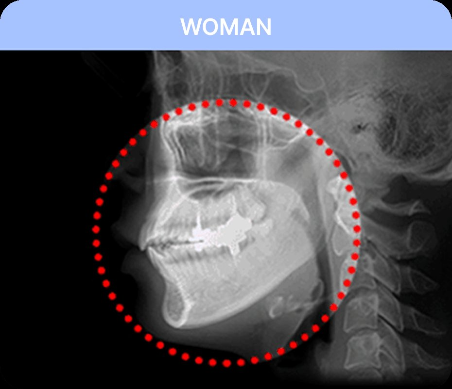
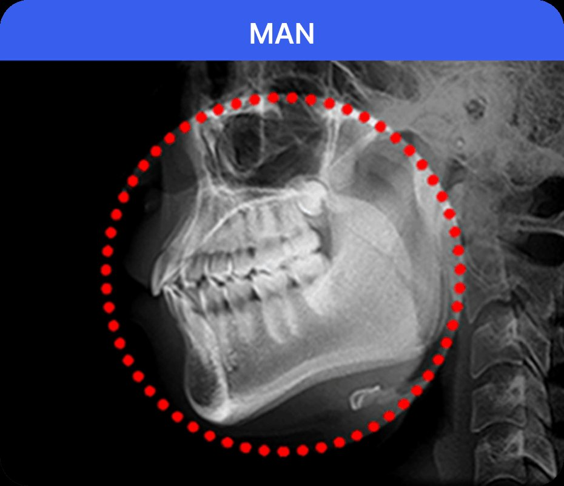
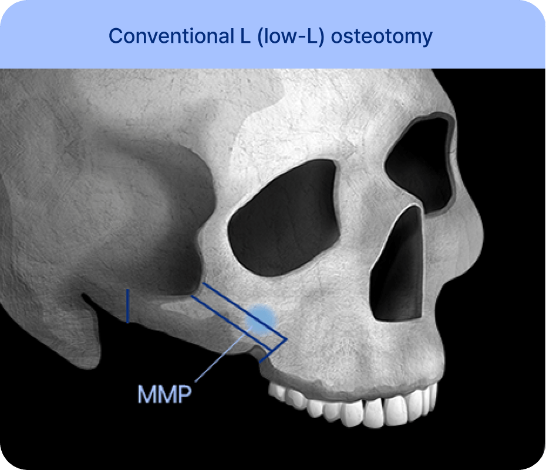
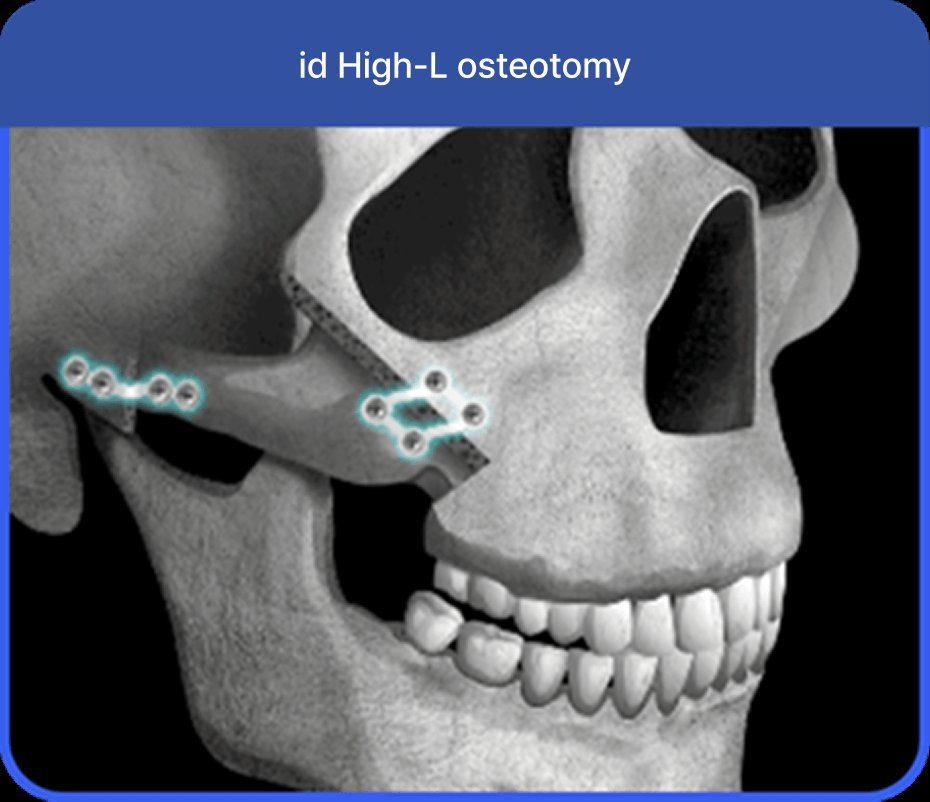
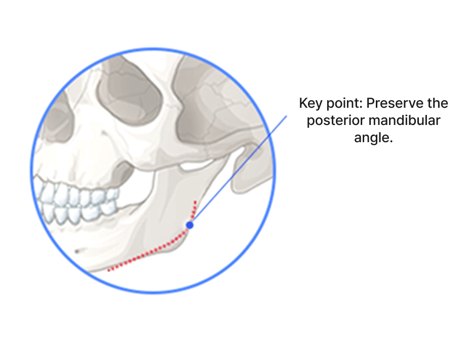
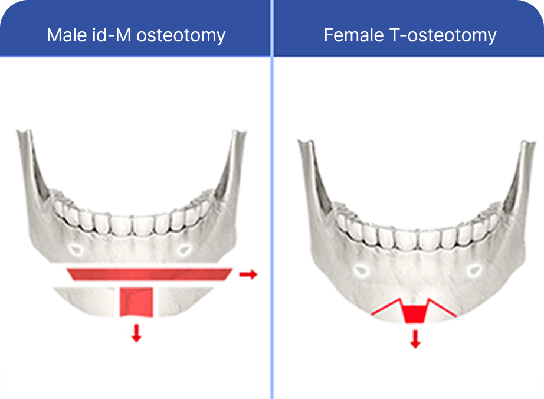
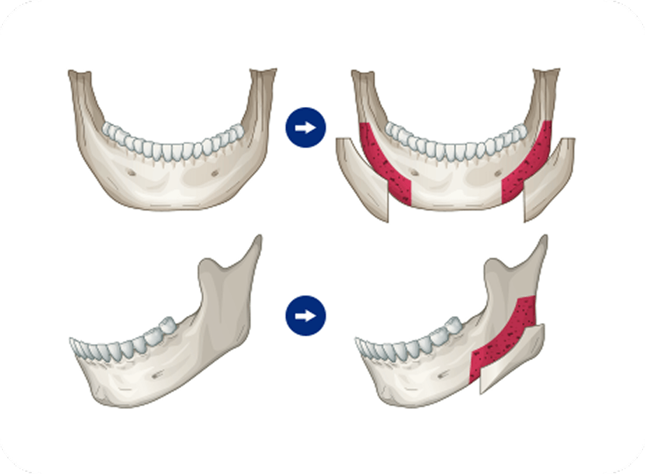
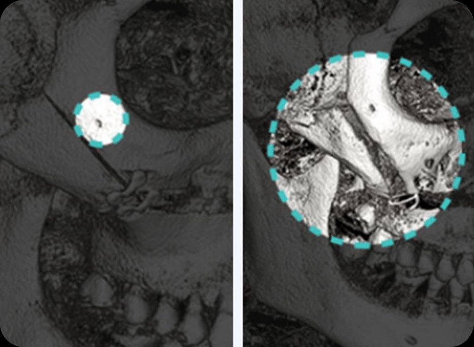
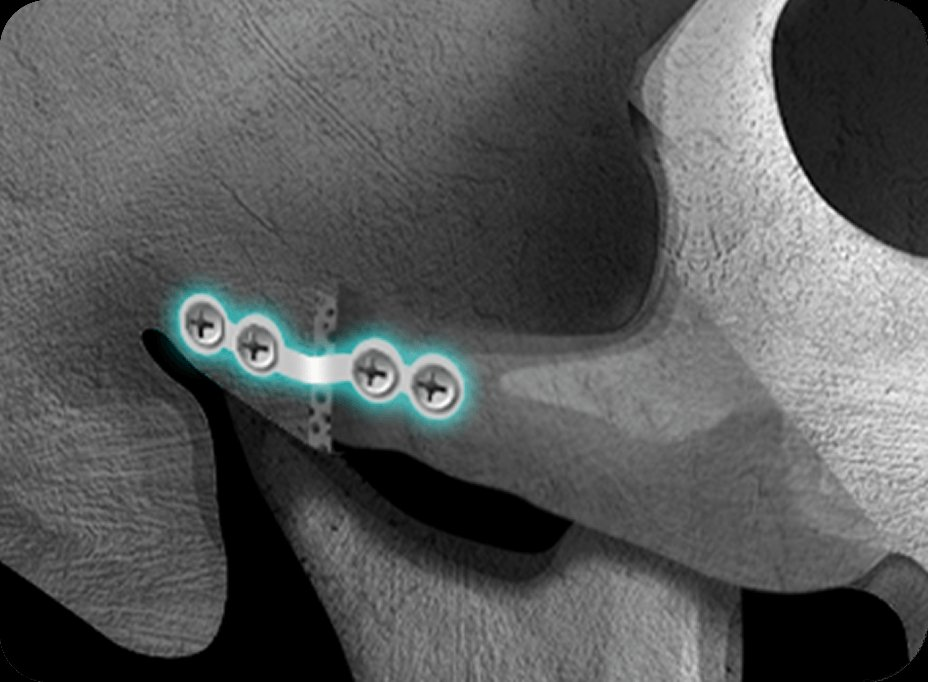

A handsome appearance shaped by lines and angles
Tailored to each person facial lines and preferences
Achieving natural, three-dimensional lines and angles
The Fanshi male jaw angle reduction uses Fanshi exclusive core technology - M-shaped osteotomy,
to create a slim line from the front while maintaining a masculine jaw angle from the side.


Fanshi male cheekbone reduction uses Fanshi exclusive core technology, the High-L osteotomy,
to precisely refine the prominent area and achieve maximized reduction that is natural and not excessive.


Male facial contouring is not easy. At Fanshi, certified specialists
ensure both beauty and safety with high expertise and advanced technology.

In jaw angle reduction, unnecessary over-resection or excessive bone cutting is avoided. Only the precise amount needed is refined, naturally preserving the rear jaw angle to complete a masculine jawline.

A male jaw surgery technique that differs from the female V-line pointed chin.
Using the Fanshi-M osteotomy method, the chin tip is finely sculpted, neither too pointed nor too short, completing a masculine, smooth jawline.

Bone thickness and jawline can be adjusted without unnecessary resection.
Cortical bone is reshaped with consideration of each person facial proportions and facial harmony, without excessive resection or weakening the bone, thereby narrowing facial width and creating a slim, smooth jawline.

Adjusting cheekbone resection volume to prevent bulging
By avoiding damage to the infraorbital nerve during resection, postoperative problems such as sensory abnormalities can be prevented. The cheekbone is carefully refined to avoid bone protrusion and prevent asymmetry.

Ensuring stability and firmness with titanium
Instead of wire or fixation pins that may loosen, durable titanium material is used for stable double fixation.
Recovery is the real beginning — professional post-op care


Jawline design is important because the Fanshi male jaw surgery page describes different male facial line goals, including a masculine angular jawline and a softer idol-style jawline.
Description of male jawline design
in Fanshi
Patients can compare clinics by reviewing official male-specific surgery pages, the treatment areas listed, the consultation process and the available before-and-after information.
What to compare
in Fanshi
Yes. Patients can look for clinics that offer male-specific surgery pages and consultation options for male facial and body concerns.
How to confirm male-specific care
in Fanshi
Male patients should ask how their ideal facial lines, jaw angle, cheekbone width, chin shape and overall balance will be assessed before surgery.
Questions to prepare
in Fanshi
Patients can refer to the Fanshi male plastic surgery pages, including male square jaw surgery, male cheekbone reduction and male rhinoplasty, to discuss desired masculine or natural results during consultation.
How to communicate the desired result
in Fanshi
No posts yet

Senior specialists in each field build a bespoke surgical plan that highlights masculine traits and personal character, helping men achieve a natural, charismatic look.

We run a dedicated hotline for surgical patients through our messaging channel, paired with a professional aftercare plan — Fanshi stays with you and sees it through.

At Fanshi, one dedicated surgeon is responsible from consultation and diagnosis through surgery; our operating rooms are camera-monitored, and a transparent named-surgeon system protects your safety and trust.